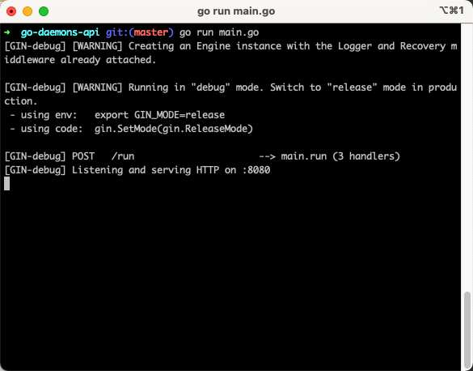
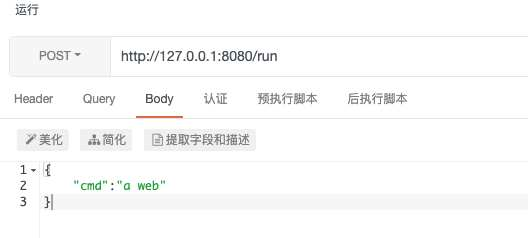
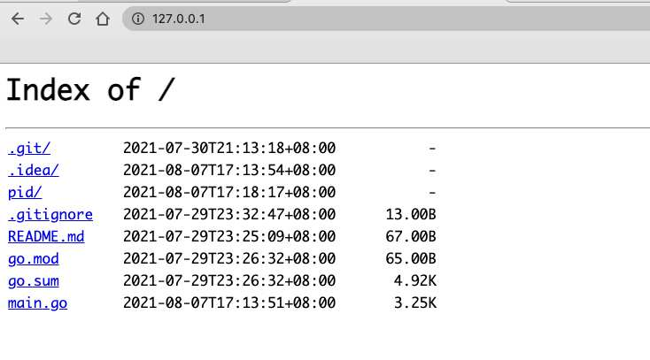

使用Go创建一个守护进程
- 作者:
- 淡白
- 创建时间：
- 2021-08-07 16:53:33
- Go daemon 守护进程 进程
摘要：本文介绍了守护进程和僵尸进程的概念。守护进程是在后台运行的进程，类似于使用`nohup`命令启动的进程。僵尸进程是子进程退出后父进程没有正确回收进程描述符导致子进程占用进程资源的进程。文章还给出了使用Go语言创建守护进程的示例代码，该代码通过调用`exec`包的相关函数创建和管理守护进程。最后，文章提供了该示例代码的GitHub链接。
守护进程
守护进程（daemon）是运行在后台的进程，类似使用nohup命令一样。
这种进程 ppid=1 且在UNIX系统进程层级中直接位于init之下。
僵尸进程
当一个进程创建了一个子进程，这个子进程退出后父进程没有调用 wait() 正确回收子进程们的进程描述符时，子进程就成了僵尸进程继续占用进程资源。
使用go创建一个守护进程
package main
import (
"flag"
"fmt"
"github.com/gin-gonic/gin"
"io/ioutil"
"net/http"
"os"
"os/exec"
"path/filepath"
"strconv"
"strings"
"syscall"
"time"
)
//https://www.cnblogs.com/tobycnblogs/p/9981796.html
var daemon bool
var launcher bool
func init() {
flag.BoolVar(&daemon, "d", false, "是否为守护启动模式")
flag.BoolVar(&launcher, "l", false, "Launcher")
flag.Parse()
if launcher {
return
}
if os.Getppid() != 1 && daemon && len(os.Args) >= 2 {
arg := make([]string, 0)
if len(os.Args) > 3 {
arg = os.Args[3:]
}
cmdStr := os.Args[2]
cmdStr += strings.Join(arg, "")
cmd := exec.Command(os.Args[2], arg...)
stat, err := os.Stat("pid/")
if err != nil || !stat.IsDir() {
os.Mkdir("pid/", 0777)
}
cmd.Start()
syscall.Umask(27)
pidFile := fmt.Sprintf("pid%c%s.pid", os.PathSeparator, cmdStr)
file, err := os.OpenFile(pidFile, os.O_WRONLY|os.O_TRUNC|os.O_CREATE, 0644)
defer file.Close()
if err == nil {
file.WriteString(strconv.Itoa(cmd.Process.Pid))
}
os.Exit(0)
} else if !launcher {
go checkPidRun()
}
}
func checkPidRun() {
for {
rd, err := ioutil.ReadDir("pid/")
if err == nil {
for _, fi := range rd {
if !fi.IsDir() {
path := fmt.Sprintf("pid%c%s", os.PathSeparator, fi.Name())
bytes, err := ioutil.ReadFile(path)
if err == nil {
pid, _ := strconv.ParseInt(string(bytes), 10, 32)
if !checkPid(int(pid)) {
os.Remove(path)
}
}
}
}
}
time.Sleep(time.Second)
}
}
func main() {
if launcher {
if len(os.Args) >= 2 {
u := daemonRun(os.Args[2])
print(u)
os.Exit(0)
}
} else {
router := gin.Default()
router.POST("/run", run)
router.Run(":8080")
}
}
func run(c *gin.Context) {
a := struct {
Cmd string `json:"cmd"`
}{}
if err := c.ShouldBindJSON(&a); err != nil {
c.AbortWithStatusJSON(
http.StatusOK,
gin.H{"error": err.Error()})
return
}
command := exec.Command(ExecPath(), "-l", a.Cmd)
out, _ := command.CombinedOutput()
parseUint, _ := strconv.ParseUint(string(out), 10, 32)
c.JSON(http.StatusOK, gin.H{"msg": "ok", "data": map[string]interface{}{
"pid": parseUint,
}})
return
}
func daemonRun(cmd string) uint {
split := strings.Split(cmd, " ")
split = append([]string{ExecPath(), "-d"}, split...)
attr := &os.ProcAttr{
Dir: "./",
Env: os.Environ(),
Files: []*os.File{
os.Stdin,
os.Stdout,
os.Stderr,
},
Sys: &syscall.SysProcAttr{
//Chroot: d.Chroot,
Setsid: true,
},
}
if c, err := os.StartProcess(ExecPath(), split, attr); err == nil {
defer c.Release()
pidFile := fmt.Sprintf("pid%c%s.pid", os.PathSeparator, strings.ReplaceAll(cmd, " ", ""))
time.Sleep(time.Second)
bytes, err := ioutil.ReadFile(pidFile)
if err == nil {
parseUint, _ := strconv.ParseUint(string(bytes), 10, 32)
return uint(parseUint)
}
c.Wait()
}
return 0
}
var appPath = ""
func ExecPath() string {
if appPath == "" {
file, err := exec.LookPath(os.Args[0])
if err != nil {
return ""
}
appPath, _ = filepath.Abs(file)
}
return appPath
}
// Will return true if the process with PID exists.
func checkPid(pid int) bool {
process, err := os.FindProcess(pid)
if err != nil {
return false
}
err = process.Signal(syscall.Signal(0))
if err != nil {
return false
} else {
return true
}
}
使用命令 go run main.go

运行这个段代码会开启一个 8080 端口的web程序。通过调用 :8080/run

会执行 a web 命令，该命令是运行一个 80 端口的 web 服务程序。
返回守护进程的 pid
{
"data": {
"pid": 6515
},
"msg": "ok"
}

然后退出我们编写的程序，80 端口依然能访问。
ps -ef|grep "a web"
501 6515 1 0 5:18下午 ?? 0:01.02 a web
实现原理
在api进程中创建一个进程①，在进程一中创建一个进程②在进程②中执行所需要运行的命令，然后进程②退出执行命令的进程将变成孤儿进程由init（pid=1）管理。但是这时由于进程②的退出产生了一个僵尸进程在进程①中调用 Wait() 函数释放进程符。然后再退出进程①。
我这里fork了两次其实fork一次也行。